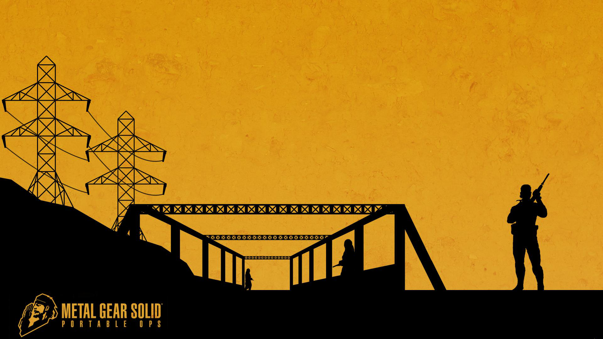

Данная часть является "полу-каноном", так как её не делал сам Кодзима, но в любом случае стоит пройти. Через неё в сюжет вводят Роя Кэмпбелла.
Данная игра выходила эксклюзивно на PSP, помимо этого игра доступна на PSVita. Для игры потребуется либо эмулятор либо одна из консолей. Но будьте внимательны, у игры есть версия MGS:PO (Plus), это не основная игра, а лишь бесконечные тренировочные уровни.
Для игры на ПК Вам потребуется: